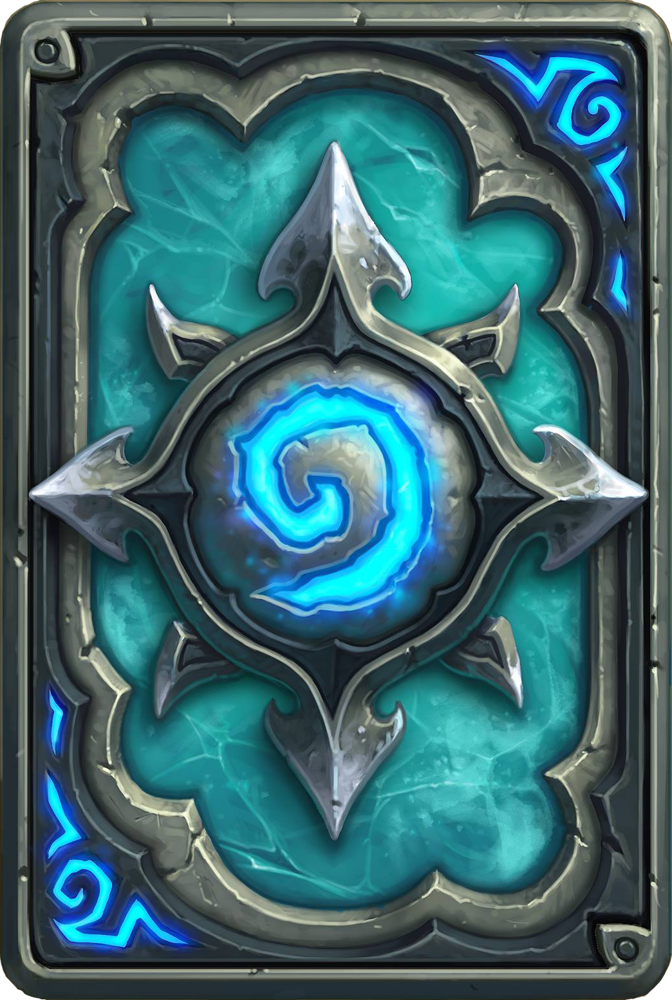

<ion-header [translucent]="true">
  <ion-toolbar>
    <ion-buttons>
      <ion-back-button defaultHref="/"> 

      </ion-back-button>
      <ion-title>Menu</ion-title>
      <ion-title>
        Memo Match
      </ion-title>
    </ion-buttons>
  </ion-toolbar>
</ion-header>

<ion-content>

      <ion-list>
        <ion-item>
          <ion-label>
            {{count.segundos}}
          </ion-label>
          <ion-label>
            Intentos {{attempts}}
          </ion-label>
        </ion-item>
    </ion-list>
  
      <main class="board-game">
        <div *ngFor="let item of [].constructor(tamano[0]); let j = index">
          <div *ngFor="let item of [].constructor(tamano[1]); let i = index">
            <figure>
              
              <div class="searched-image">
                
              </div>
            </figure>
          </div>
        </div>
      </main>
</ion-content>
